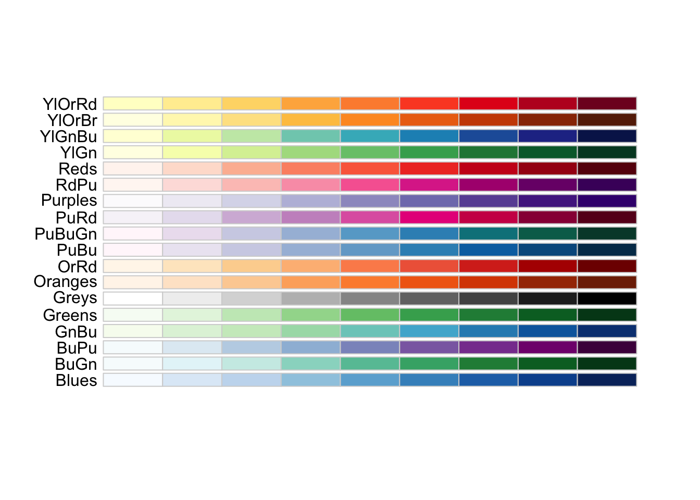
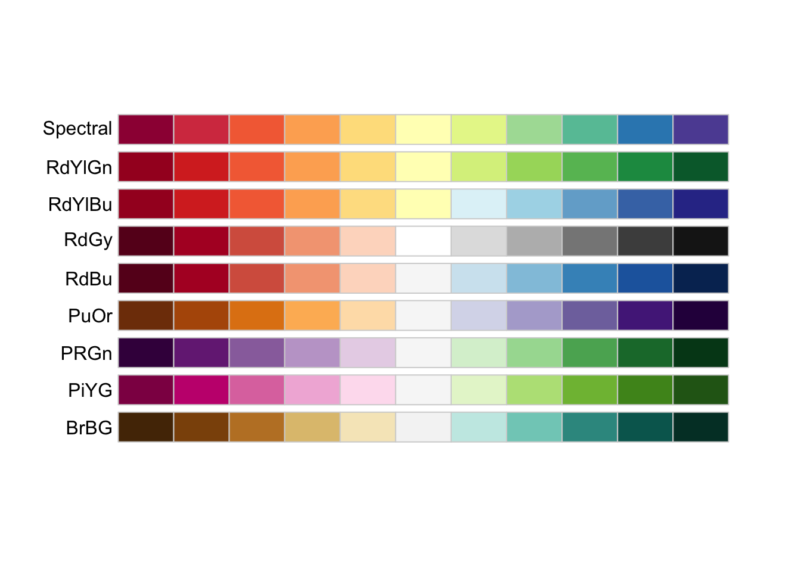
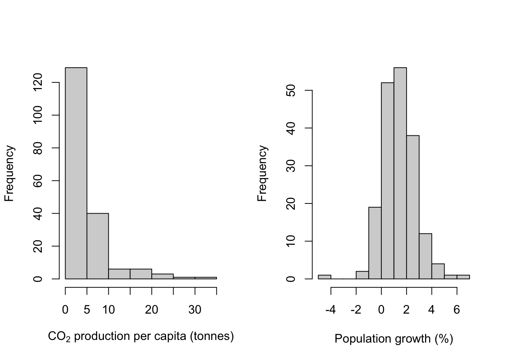
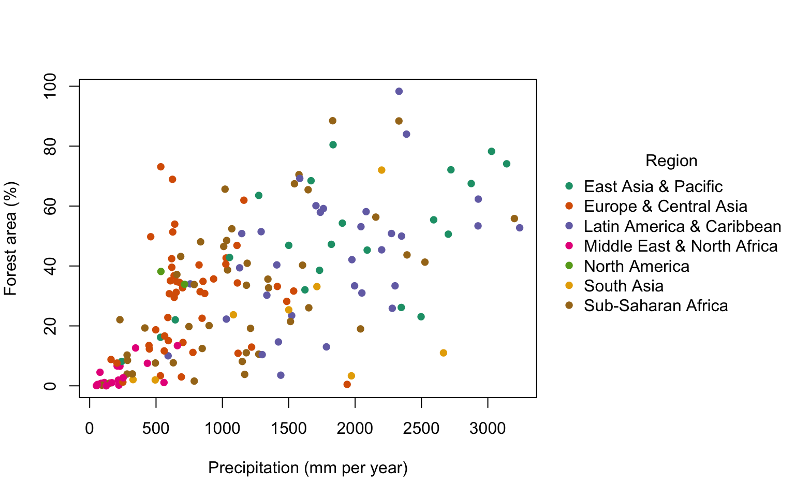
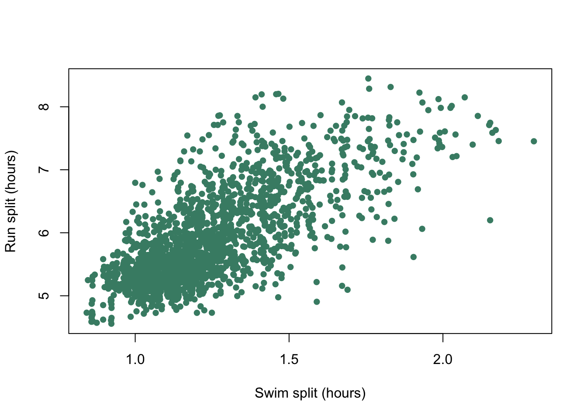
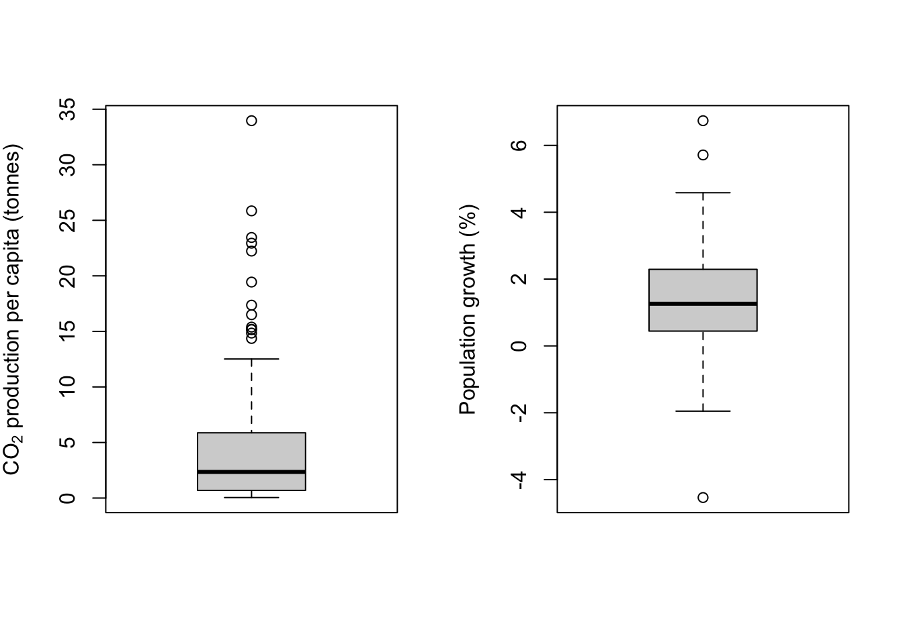
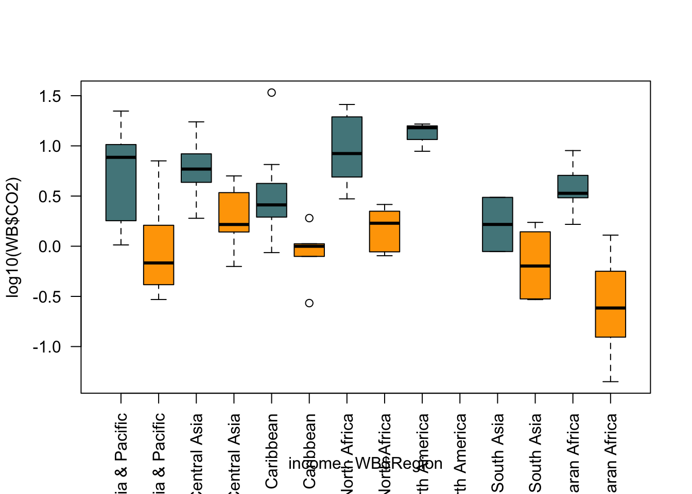
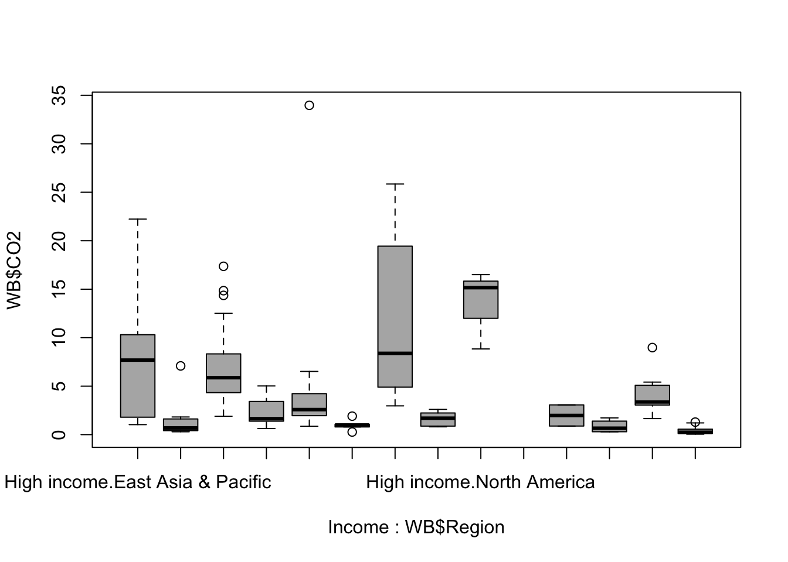
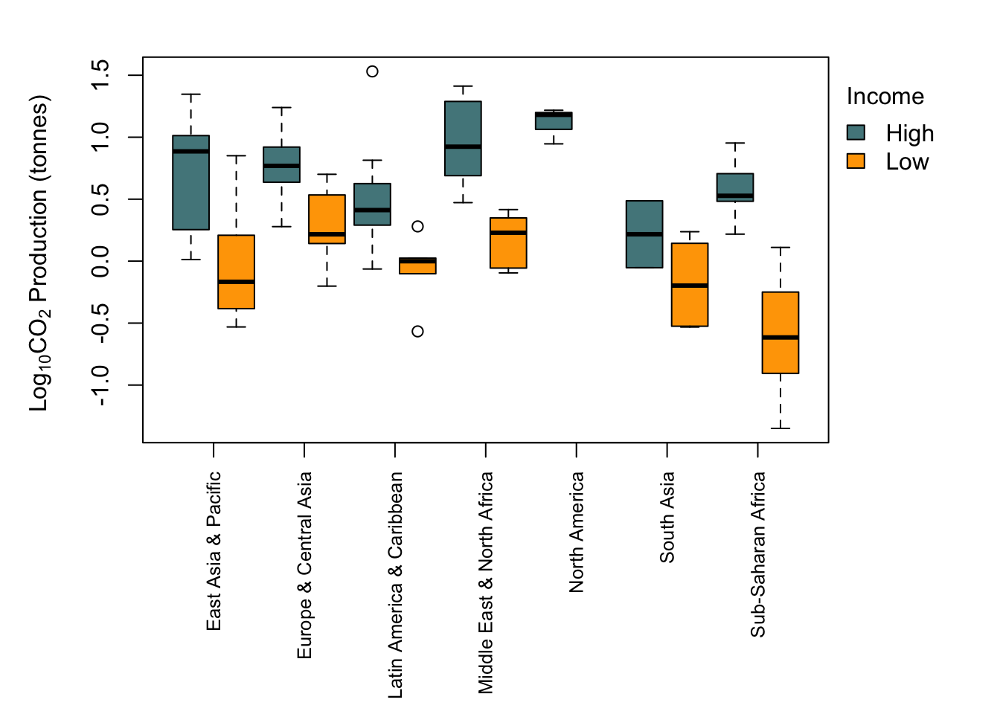
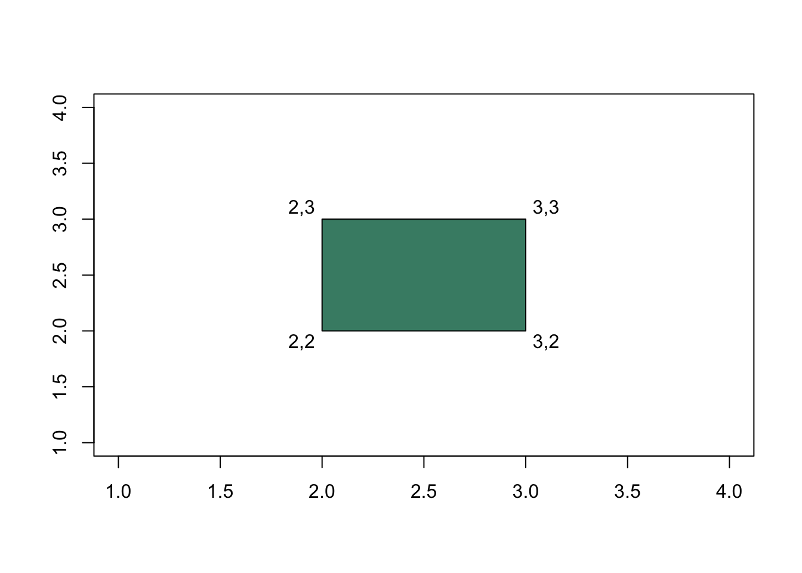

Chapter 9 R graphics I — scatterplots & line graphs, plot symbols and colours using the base graphics system
When it comes to drawing graphs, using R gives you the same benefits and costs that you get when analysing data. Everything is done through a command-line interface that can be difficult to use and sometimes counterintuitive. Whereas with other software you get a nice GUI and can just point and click until you achieve what it is you’re after, if you’re drawing graphs in R you might have to do some research first to find out how to draw the graph you’re after. That initial difficulty, however, is more than counterbalanced by the huge benefits of using R as your platform for data visualisation: R is almost infinitely flexible and can draw an extraordinary range of graphs, and you’ll find that in many cases the default options are very good starting points; unlike those in a certain popular spreadsheet application, for example, they have been designed by people possessed of both brains and colour vision. Finally, generating a script when you draw your graph means that you can easily return and edit your graph, and if you want to draw a similar graph with different data you can re-use your script with a few edits. Finally, you can use other peoples’ scripts. There are plenty of online resources with examples of graphs produced in R, and many of these have the code used to draw the graph associated with them. If you find an example of the sort of graph you want to make, you can use the code that’s already there as the basis of your own script. Have a look at the R Graph Gallery, a web resource set up for exactly this purpose, for an idea of the range of options available.
9.1 Base graphics versus ggplot2 versus lattice versus whaaat???
As a budding R user, your life has been made more complicated by the presence of a number of different options for creating graphics in R. Firstly, there is the graphics system which is built into R which is called base graphics. Despite the implication from the name that it’s a bit basic, this is a sophisticated and powerful system which can easily generate publication-quality graphs… which is sometimes a surprise to the ggplot2 fanbois. There are then two main alternative systems, lattice and ggplot2, which work very differently to the base system. Of these, ggplot2 has become the most well-known, and many people are now using it exclusively. I don’t think it’s possible to be a fully functional R user nowadays without knowing at least the fundamentals of ggplot2, so in this chapter and the next we’ll take an in-depth look at base graphics, and then we’ll move on to some ggplot2 basics.
9.2 Base graphics example: UFO reports again
We’ll start off with looking at an example of how to produce a graph in R. In the previous chapter we looked at a script which drew a graph for you: the plot of UFO reports by month since 1900. Let’s have another look at that script and go through the code. Here it is again.
# Script to read data on UFO reports and plot the data since 1900
# Audrey Bloggs 25th December 2022
# Load data from website
UFO <- read.csv("http://www.introductoryr.co.uk/UFO_data.csv",
stringsAsFactors = FALSE)
# Convert 'Reports' variable to date
UFO$Reports <- as.Date(UFO$Reports, format = "%d/%m/%Y")
# Trim off dates before 1900 which have a different format and convert to NA
UFO <- UFO[which((!is.na(UFO$Reports))), ]
# Check the data structure
str(UFO)
# Plot the data
plot(UFO$Count ~ UFO$Reports,
type = "l",
col = "steelblue",
xlab = "Year",
ylab = "Number of UFO reports by month",
main = "UFO reports by month since 1900")The first two thirds of the script are devoted to importing the data, cleaning it up and checking that everything’s gone well, and then we have the plot() function call which actually draws the graph. plot() is a particularly flexible and powerful R function, and it can produce a wide range of different outputs depending on the nature of the data or R objects that we feed to it. Our complete function call looks like this.
plot(UFO$Count ~ UFO$Reports,
type = "l",
col = "steelblue",
xlab = "Year",
ylab = "Number of UFO reports by month",
main = "UFO reports by month since 1900")Just like other functions in R we have a series of arguments within the brackets, with each argument separated from the previous one by a comma. I’ve got each argument after the first on a separate line, which makes it easier to see what’s happening in this piece of code. The first argument that we’re giving to our plot() function tells it where to find the data to plot. In this case we’re giving it two data variables, a numeric variable, UFO$Count and a date variable UFO$Reports, and they are separated by a tilde ~. The tilde is an important symbol in R. This is the first time you’ve met it, but you’ll see it a lot in defining formulas for statistical tests. You can think of it as meaning “is explained by” or as something which separates a dependent variable from an independent variable, or a response variable from an explanatory variable: if we think that one variable depends on the value of the other then the former would be the dependent or response variable and the latter the independent or explanatory variable. In this case the number of UFO reports depends on the year: there is clearly a big effect of year in determining the number of reports logged, but the year deosn’t depend on the number of reports. No-one is going to say “there have been 215 UFO reports, so we will call this year 2003”. Conventionally we put a dependent variable on the y-axis and an independent one on the x-axis, and this is what R will do.
If we just use the first argument, UFO$Count ~ UFO$Reports and none of the rest then R will go for the default option for a graph with continuous variables for both the x- and the y-axis, and draw a scatterplot with each data point represented by an open circle.
Figure 9.1: Scatterplot of UFO reports by year
That’s not really what we’re after and doesn’t really show the important patterns in the data. We can tell R to draw a line connecting each data point instead of the scatterplot by adding the type = 'l' argument:

Figure 9.2: Line plot of UFO reports by year
which gives something much closer to what we’re after. We can change the colour of the line using the col = "steelblue" argument, xlab = "Year" sets the axis label for the x-axis, ylab = "Number of UFO reports by month" does the same for the y-axis and finally main = "UFO reports by month since 1900" gives us a main title for the graph…
plot(UFO$Count ~ UFO$Reports,
type = "l",
col = "steelblue",
xlab = "Year",
ylab = "Number of UFO reports by month",
main = "UFO reports by month since 1900")
… and with remarkably little fuss we have a nice, publication quality graph displaying our data. This example shows us the basics of producing graphs in R: the plot() function produces a particular kind of graph depending on the data that you feed it, but you can then modify the look of the graph and change things like the axis labels by using further arguments to your plot() function call. It’s worth pointing out here that these arguments are often called graphical parameters when we’re referring to arguments that change the appearance of a graph, but they work in the same way as arguments for other types of function. We’ll talk a little more about graphical parameters later on in the chapter.
9.3 Scatterplots
Let’s look at scatterplots in rather more detail. We’ll draw a scatterplot and then specify the shape and colour of the datapoints according to some classification, then finally we’ll add some fitted lines to our data. The dataset we’ll be using is from a paper published in the Journal of Evolutionary Biology by John Fitzpatrick and coauthors1 on the subject of how brain size in pinnipeds (seals, walruses and sea lions) relates to their mating system. The fundamental question they were addressing is whether brain size varies between seals where the males defend groups of females (“harems”), and species where males pair up with single females.
The dataset is online and you can load it straight into R from the web by running this line of code.
pinniped <- read.csv("http://www.introductoryr.co.uk/Pinniped_brains.csv", stringsAsFactors = FALSE)As always, we want to know whether our dataset has imported properly so we check using the str() function.
str(pinniped)
'data.frame': 33 obs. of 11 variables:
$ Species : chr "Monachus schauinslandi" "Monachus monachus" "Mirounga angustirostris" "Mirounga leonina" ...
$ Male_brain : num 370 480 700 1431 535 ...
$ Female_brain : num NA 480 640 899 638 ...
$ Male_mass : num 173 260 2275 3510 450 ...
$ Female_mass : num 272 275 488 566 447 ...
$ Harem : num 1 1 13 48 3 1 1 1 1 1 ...
$ Small_intestine: int 1030 870 3820 12100 2700 790 2530 2190 2520 2164 ...
$ Gestation : int 330 330 230 225 263 248 255 276 234 270 ...
$ Lifespan : num 360 284 244 276 300 ...
$ Lactation : int 38 42 26 23 50 30 17 29 4 24 ...
$ Dive_duration : num 12 NA 62 120 82 9.8 10.8 NA 52 25 ...All good: we have quite a few variables including a character vector of species names, male and female brain mass (g), male and female body mass (Kg) and the average harem size, where 1 indicates each male is only mating with a single female at a time and values greater than 1 tell us that males, if they are able, will guard females in groups.
Let’s plot male brain mass against body mass to start with.

Figure 9.3: Brain mass versus body mass for 33 species of male pinniped
This plot is showing us that there is some sort of relationship between brain mass and body mass, but it is difficult to tell much from it because both the brain mass and body mass data are squished down into the bottom left corner. This is because both of these variables are positively skewed: there are lots of seals and their relatives with body mass between about 50 and about 500Kg, but then there are a few which are much heavier up to Mirounga leonina, the Southern Elephant Seal, which is an absolute chonker with males weighing in at about 3.5 metric tonnes. We need to do something to spread the data out more evenly, and usually when dealing with this sort of positively skewed data we’d plot the log transformed data rather than the raw data. There are two easy ways to do this in R: you can generate new variables which are the logged values that you want to plot, or you can use an argument within the plot() function call to tell it to plot the data on a log scale.
Here is the first option.
#Generate new variables with the log transformed data
log_Male_brain <- log(pinniped$Male_brain)
log_Male_mass <- log(pinniped$Male_mass)
#plot our new variables
plot(log_Male_brain~log_Male_mass)Figure 9.4: Log brain mass versus log body mass for 33 species of male pinniped
You can see that log transforming these data gives us a nice looking plot with the data spread out so that we can see any patterns that might be there. How about the other alternative?

Figure 9.5: Brain mass versus body mass for 33 species of male pinniped, plotted on log scaled axes
The positioning of the points is exactly the same, but the numbers on the axes are different. What’s happened here is that instead of log-transforming the data we’ve plotted the untransformed data on axes that are on log scales —– you can see this by looking at the numbers on the x-axis in particular, where the distance from 100 to 200 is about the same as the distance from 1000 to 2000. If you only wanted the y-axis plotted on a log scale you could use log = "y" and if you only wanted the x-axis on a log scale then log = "x" would do.
Which of these options for plotting logged data you use is up to you and the best option will depend on the context. I generally prefer the latter, since you retain the original units for your axes which makes it easier to understand what each data point represents.
Talking of units, the axis labels on our plot are not especially informative, so let’s fix that by telling the plot() function what we want our axis labels to be. We can do that using the xlab = and ylab = arguments.
plot(pinniped$Male_brain ~ pinniped$Male_mass,
log = "xy",
xlab = "Body mass (Kg)",
ylab = "Brain mass (g)")
Figure 9.6: Brain mass versus body mass for 33 species of male pinniped plotted on log scaled axes
Good. This is now looking like a graph that we might start to think about publishing. You can see how the default options for things like axis limits and plot symbols are clean and well chosen in base R graphics. We’ve not finished though: we want to change our graph so that the viewer can differentiate between species with “harem” mating systems and other species.
The Harem variable in our data set tells us the average size of the group of females that a male will defend for each species, so if Harem = 1 then we can classify a species as a non-harem one, and if Harem > 1 then we can classify a species as one with a harem mating system. We can then use subscripting to allocate a specific colour or plot symbol to the data points for harem or non-harem species.
9.4 Plot symbols
We can get R to draw different plot symbols by using the pch = graphical parameter. R has a set of built in symbols that are represented by the numbers 1 to 25. Here they are: the code used to draw this figure is at the end of this chapter.

Figure 9.7: Plot symbols used in R
So if we’d like to plot our data with filled circles instead of open ones, we can set pch = 16 as one of our graphical arguments, like this.
plot(pinniped$Male_brain ~ pinniped$Male_mass,
log = "xy",
xlab = "Body mass (Kg)",
ylab = "Brain mass (g)",
pch = 16)Figure 9.8: Brain mass versus body mass for 33 species of male pinniped plotted on log scaled axes using closed circles as plot symbols
9.5 Colours
The colour or colours that your plot symbols are drawn with (or the colours of the boxes in a boxplot, or the bars in a histogram or bar plot) can be set in R by using the col parameter, and other parameters such as bg, col.axis, col.lab set the colours for other parts of the plot: these examples will allow you to change the background colour and the colours of the axes and the axis labels respectively. For a full list of these take a look at ?par which will bring up a description of all of the graphical parameters. The actual colours to be used can be named in a confusing variety of different ways, but for the beginner the easiest thing to do is simply to use the name: “red”, “blue”, “green” or “lightblue” or “darkgreen”. In fact, R has a rather surprising number of named colours that you can use, and an even more surprising range of names, from “aliceblue” through “darkgoldenrod2”, “hotpink1”, “lemonchiffon3” to “tomato4”. The function colours(), or colors() if you prefer the American spelling will produce a list of all 657 named colours in R. Appendix 1 has a series of charts showing each colour with its name.
If you’re familiar with how colours are described in computers then you can use the RGB hexadecimal code for the colour: this begins with a hash symbol and then has two numbers for the red channel (computers think in hexadecimal to each one is 0-9 and the A-F), two for the green and two for the blue, so #0000FF is blue, #FF0000 is red, #000000 is black and #FFFFFF is white. We’ll talk about using these hex codes a little later when we discuss using alpha channels to make elements of your graph semi-transparent.
If we wanted to change the colours of our plot symbols from the default black option we just need to add another argument specifying the exact colour we want. If we wanted aquamarine4 as our plot colour then our code would look like this.
plot(pinniped$Male_brain ~ pinniped$Male_mass,
log = "xy",
xlab = "Body mass (Kg)",
ylab = "Brain mass (g)",
pch = 16,
col = "aquamarine4")
Figure 9.9: Brain mass versus body mass for 33 species of male pinniped plotted on log scaled axes with both plot symbol and colour specified
9.6 Plotting multiple symbols or colours
One of the most important uses of colour or plot symbols is to distinguish between different classes of data, and this is something that we can do in R: if we have a variable which classifies our data into groups, then we can use that to tell R which colours or symbols to use. Using our data on pinnipeds, we can divide our species into harem breeders, where males defend groups of more than one female during the mating season, and non-harem breeders where each male is only associated with a single female. The variable Harem gives us the number of females that a male might be associated with and we can use this to set up a new factor called Mating_system which has two levels, Harem for males who will seek to defend more than one female and Non harem for males who only associate with a single female at a time.
Here we’ve used the ifelse() function which takes a logical statement, in this case whether the value of Harem is equal to one, and returns one value, in this case "Non harem", if the logical statement is true and a second value ("Harem") if the statement is false. Now we can plot our data and indicate to the viewer which mating system is associated with each data point. Firstly we’ll do this with colours, and then with different plot symbols.
To indicate how our points are classified we need a vector of colours for R to use in our plot. This example has only two but if you have more groups you just need more colours in your vector.
Now we have a vector of colours and a factor which classifies our data. How do we use these to generate a plot with each data point colour coded by the factor levels? The answer lies in some clever use of subscripts. colours is a character vector and we can retrieve the first or second value by using a subscript:
returns the second value in the vector. If we have a second vector of numbers which correspond to the useable subscripts for our colours vector then we can use this to generate a new vector of colour names:
example <- c(1,1,2,1,2,2,1)
colours[example]
[1] "aquamarine4" "aquamarine4" "chocolate2" "aquamarine4" "chocolate2"
[6] "chocolate2" "aquamarine4"which returns a vector with seven colour names, each corresponding to the relevant value in our example vector. Now let’s go back to our Mating_system factor. This has two levels, Harem and Non harem and these levels will be coded by R as 1 for Harem, which coes first alphabetically, and 2 for Non harem which comes second. If, therefore, we use Mating_system as a subscript for colours it should return "aquamarine4" for each value of Non harem in Mating_system and "chocolate2" for each value of Harem. Let’s try that out.
colours[Mating_system]
[1] "chocolate2" "chocolate2" "aquamarine4" "aquamarine4" "aquamarine4"
[6] "chocolate2" "chocolate2" "chocolate2" "chocolate2" "chocolate2"
[11] "aquamarine4" "chocolate2" "chocolate2" "chocolate2" "chocolate2"
[16] "chocolate2" "chocolate2" "chocolate2" "aquamarine4" "aquamarine4"
[21] "aquamarine4" "aquamarine4" "aquamarine4" "aquamarine4" "aquamarine4"
[26] "aquamarine4" "aquamarine4" "aquamarine4" "aquamarine4" "aquamarine4"
[31] "aquamarine4" "aquamarine4" "aquamarine4"Et voilà! we can generate a vector of colours which we can include in our plot() function call with only a very brief piece of code.
plot(pinniped$Male_brain ~ pinniped$Male_mass,
log = "xy",
xlab = "Body mass (Kg)",
ylab = "Brain mass (g)",
pch = 16,
col = colours[Mating_system])
Figure 9.10: Brain mass versus body mass for 33 species of male pinniped plotted on log scaled axes, orange symbols indicate non-harem breeders and green indicate harem breeders
There we are. Now, if I were given chocolate that colour to eat I’d be rather dubious, but aside from that we’ve achieved our goal.
We can vary the plot symbol using the exact same logic. If we wanted to indicate mating system by using a filled circle (plot symbol 16) for Harem and a filled triangle (plot symbol 17) for Non harem we need to set up a vector containing these two numbers:
and then we can use this in our plot() function call with a subscript in the same way that we did for colours.
plot(pinniped$Male_brain ~ pinniped$Male_mass,
log = "xy",
xlab = "Body mass (Kg)",
ylab = "Brain mass (g)",
pch = symbols[Mating_system])Figure 9.11: Brain mass versus body mass for 33 species of male pinniped plotted on log scaled axes, triangles indicate non-harem breeders and circles indicate harem breeders
9.7 Colour palettes in R
You don’t have to choose your own colours for your plots. R has a number of built-in selections of colours which are known as “palettes”. There is a default palette which is a vector of 8 different colours which can be found using the palette() function.
If you’re just interested in a quick look at your data then you can just use code like this where I’ve specified our Mating_system factor for the col = argument, and R will use the first two colours in the default palette.
plot(pinniped$Male_brain ~ pinniped$Male_mass,
log = "xy",
xlab = "Body mass (Kg)",
ylab = "Brain mass (g)",
pch = 16,
col = Mating_system)Figure 9.12: Brain mass versus body mass for 33 species of male pinniped plotted on log scaled axes, colour coded for mating system
That doesn’t look too bad but you might not want to use it for a presentation or a publication. The default R palette has something of a bad reputation and the potential combinations of bright red, green and blue is enough to give most people a headache, not to mention the possible problems for people with red-green colourblindness. There will be a new and less offensive default palette coming to R soon but at the time of writing this hasn’t been implemented yet. The good news though is that there are a lot of other palettes now available in a base R installation as part of the grDevices package, and there are also some really nice ones available as installable packages. The ncl.pals() function will give you a list of what’s available in your base installation so long as it’s a fairly recent one.
hcl.pals()
[1] "Pastel 1" "Dark 2" "Dark 3" "Set 2"
[5] "Set 3" "Warm" "Cold" "Harmonic"
[9] "Dynamic" "Grays" "Light Grays" "Blues 2"
[13] "Blues 3" "Purples 2" "Purples 3" "Reds 2"
[17] "Reds 3" "Greens 2" "Greens 3" "Oslo"
[21] "Purple-Blue" "Red-Purple" "Red-Blue" "Purple-Orange"
[25] "Purple-Yellow" "Blue-Yellow" "Green-Yellow" "Red-Yellow"
[29] "Heat" "Heat 2" "Terrain" "Terrain 2"
[33] "Viridis" "Plasma" "Inferno" "Dark Mint"
[37] "Mint" "BluGrn" "Teal" "TealGrn"
[41] "Emrld" "BluYl" "ag_GrnYl" "Peach"
[45] "PinkYl" "Burg" "BurgYl" "RedOr"
[49] "OrYel" "Purp" "PurpOr" "Sunset"
[53] "Magenta" "SunsetDark" "ag_Sunset" "BrwnYl"
[57] "YlOrRd" "YlOrBr" "OrRd" "Oranges"
[61] "YlGn" "YlGnBu" "Reds" "RdPu"
[65] "PuRd" "Purples" "PuBuGn" "PuBu"
[69] "Greens" "BuGn" "GnBu" "BuPu"
[73] "Blues" "Lajolla" "Turku" "Blue-Red"
[77] "Blue-Red 2" "Blue-Red 3" "Red-Green" "Purple-Green"
[81] "Purple-Brown" "Green-Brown" "Blue-Yellow 2" "Blue-Yellow 3"
[85] "Green-Orange" "Cyan-Magenta" "Tropic" "Broc"
[89] "Cork" "Vik" "Berlin" "Lisbon"
[93] "Tofino" "ArmyRose" "Earth" "Fall"
[97] "Geyser" "TealRose" "Temps" "PuOr"
[101] "RdBu" "RdGy" "PiYG" "PRGn"
[105] "BrBG" "RdYlBu" "RdYlGn" "Spectral"
[109] "Zissou 1" "Cividis" This long list is in fact an implementation of the colour palettes available in the colorspace package for R, and these are themselves a mix of palettes from a variety of sources: for example the Viridis palette is from the eponymous Viridis package.
I personally find a lot of these built-in colour palettes to be rather uninspiring and I prefer to use palettes from the RColorBrewer package. RColorBrewer gives you an R implementation of the palettes available on the Color Brewer website. The website is oriented towards cartographers but the palettes are useful for all sorts of data visualisations. The package will need to be installed if you don’t already have it so you’d need to run install.packages("RColorBrewer").
The palettes in RColorBrewer and elsewhere are usually grouped into “sequential”, “diverging” and “qualitative” palettes. Sequential ones are suited for data on an ordered scale and tend to have a single underlying colour which is presented at varying degrees of lightness. Here are the available palettes from RColorBrewer:
Diverging palettes, like the sequential ones are suited for data where there is some sort of order but these palettes have contrasting colours for high and low values and (usually) pale shades for mid-range values.

Finally, qualitative palettes do not have any implied ordering and are best for representing data where the differences between data points are themselves not ordered.

These palettes have a variety of numbers of colours, and chances are that you’ll want to use a different number from the default. You can’t use more than the maximum, but you can easily generate and visualise sub-palettes with fewer colours present. As an example, if you wanted a palette based on the Dark2 palette but with seven colours only you can use the display.brewer.pal() function to visualise it and the brewer.pal() function to generate a new object with the appropriate hex codes.

giving us a character vector called palette1 with seven elements which are the hex codes for our colours.
Let’s use this palette to plot a graph. The World_bank_data_2014.csv dataset contains a wide variety of data on economics and development measured in 2014 for 186 countries around the World, as published by the World Bank. Two variables are the percentage of the surface area which are classified as forested (Forest_area) and the annual rainfall in mm (Precipitation). Let’s plot these out, and colour code our data points by region (which happens to have seven values…)
First of all we need to load the data. I’m running R4.0 so I’ll need to specify the variables that I’d like to use as factors.
WB <- read.csv("http://www.introductoryr.co.uk/World_bank_data_2014.csv")
WB$Region <- as.factor(WB$Region)
WB$Income_group <- as.factor(WB$Income_group)
str(WB)
'data.frame': 186 obs. of 22 variables:
$ Country_Name : chr "Afghanistan" "Angola" "Albania" "Andorra" ...
$ Country_Code : chr "AFG" "AGO" "ALB" "AND" ...
$ Region : Factor w/ 7 levels "East Asia & Pacific",..: 6 7 2 2 4 3 2 3 1 2 ...
$ Income_group : Factor w/ 4 levels "High income",..: 2 3 4 1 1 4 4 1 1 1 ...
$ Population : int 33370794 26941779 2889104 79213 9214175 42669500 2912403 92562 23475686 8546356 ...
$ Land_area : num 652860 1246700 27400 470 71020 ...
$ Forest_area : num 2.07 46.51 28.19 34.04 4.53 ...
$ Precipitation : int 327 1010 1485 NA 78 591 562 1030 534 1110 ...
$ Population_density : num 51.1 21.6 105.4 168.5 129.7 ...
$ Capital_lat : int 33 -13 41 43 24 -34 40 17 -35 47 ...
$ GNP_per_Cap : int 630 5010 4540 NA 44330 12350 4140 12730 65150 50370 ...
$ Population_growth : num 3.356 3.497 -0.207 -1.951 0.177 ...
$ Cereal_yield : num 2018 888 4893 NA 12543 ...
$ Under_5_mortality : num 73.6 92.9 10 3.4 7.9 12 15.1 7.6 4 3.8 ...
$ Renewables : num 19.314 50.797 38.69 19.886 0.146 ...
$ CO2 : num 0.294 1.29 1.979 5.833 22.94 ...
$ PM25 : num 59 33 18.9 10.8 38 ...
$ Women_in_parliament : num 27.7 36.8 20 50 17.5 36.6 10.7 11.1 26 32.2 ...
$ GINI_index : num NA NA NA NA NA 41.7 31.5 NA 35.8 30.5 ...
$ Govt_spend_education : num 3.7 NA NA 3 NA ...
$ Secondary_school_enrolment: num 52.6 NA 97.7 NA NA ...
$ School_gender_parity : num 0.654 NA 0.977 NA NA ...Now that we have our data a little housekeeping is in order. We’re going to want to add a legend ot our plot in the right hand margin so we need to adjust the sizes of the figure margins using par(mar = c(5,4,4,12)). The vector of numbers is the size of the margins in the order of bottom, left, top, right and it would normally be set at c(5,4,4,2) + 0.1 so we’re making the right hand margin much bigger than it would normally be.
par(xpd = TRUE) sets R so that we can plot our legend in the margin: normally in base graphics it would be restricted to inside the plotting area.
Now that we’ve done that we can plot our graph, add the legend and then finally set our two parameters back to their default values. It’s always a good idea to do this because if you don’t then you’ll inevitably forget and then you’ll end up wondering why your graph looks odd.
par(mar = c(5,4,4,13))
par(xpd = TRUE)
plot(WB$Forest_area ~ WB$Precipitation,
col = palette1[WB$Region],
pch = 16,
xlab = "Precipitation (mm per year)",
ylab = "Forest area (%)")
legend(x=3500, y=80,
col = palette1,
pch = 16,
legend = levels(WB$Region),
bty = "n",
title = "Region")
par(mar = c(5,4,4,2) + 0.1)
par(xpd = FALSE)Before we look at our final plot, let’s just run through those plot() and legend() function calls and see what all the arguments do.
plot(WB$Forest_area ~ WB$Precipitation,
col = palette1[WB$Region],
pch = 16,
xlab = "Precipitation (mm per year)",
ylab = "Forest area (%)")This is the function call that plots the graph. We start off by giving plot() the names of two continuous variables (Forest_area and Precipitation), both from the WB data frame. These are separated by a tilde ~ which means “the one on the left of the tilde as explained by the one on the right”… so plot() will draw us a scatterplot with Forest_area on the y-axis and Precipitation on the x-axis.
Next comes col = palette1[WB$Region], which determines the colours used in the plot. We’ve already set up palette1 which is a vector of seven colours derived from the RColorBrewer Dark2 palette. Using the factor Region from the WB data frame as a subscript generates a vector of colours corresponding to the factor levels, as we saw above. Finally we have three fairly simple arguments. pch = 16 sets the plot symbol to be a filled circle, and xlab = and ylab = set the two axis labels.
This plots our graph. Moving on to the legend() function call, this is one of a number of R functions which you can use to draw things like lines, text or more data on to an existing graph and we’ll discuss these in detail in the next chapter. For the moment, I’ll just quickly run you thorugh what the various arguments are doing.
legend(x=3500, y=80,
col = palette1,
pch = 16,
legend = levels(WB$Region),
bty = "n",
title = "Region")The x=3500, y=80 arguments are telling R where to put the top left corner of the legend. The units are the same as those that the graph is plotted in, which makes life a bit easier. Note that 3500 is outside the range of the x-axis, so we’re asking R to plot the legend next to the graph rather than inside the graph box, which is why we have to set par(xpd = TRUE).
col = palette1 tells legend() which colours to include, and pch = 16 tells it which plot symbol to use. legend = levels(WB$Region) is the code which tells legend() what text to use. In this case the levels() function will give us the names of the levels of the WB$Region factor, and this is the information we’d like on the legend. Two final arguments are bty = "n" — bty stands for “box type” and setting this to “n” means that there isn’t a box drawn around the legend, and finally title = "Region" specifies a title for the legend.
Here’s the final graph:

This is an interesting graph. You can see that there is a strong but messy relationship between total precipitation and forest cover, so almost all of the nations with high forest cover also have relatively high precipitation. There are, however, some nations with high precipitation but rather low forest cover. The colour coding lets us see which regions fall where on this graph, so high ofrest cover and high precipitation nations are mostly from the East Asia & Pacific and Latin America & Caribbean regions. The Middle East and North Africa has, of course, a lot of desert and a generally very low rainfall and these nations can all be seen clustering close to the origin.
9.8 Histograms and multiple plots in the same window
R doesn’t only draw scatterplots, of course. When you have continuous data of any sort then you might well want to draw a frequency histogram which will show the shape of the dataset. The R function which draws histograms is hist() and if you’re just doing some exploratory analysis this is a super-speedy way of having a look at the shape of your data.
Here are two examples:
par(mfrow = c(1,2))
hist(WB$CO2,
xlab = expression(paste("CO"[2], " production per capita (tonnes)")),
main = "")
hist(WB$Population_growth,
xlab = "Population growth (%)",
main = "")
I’ve introduced a couple of new things here in addition to the hist() function calls. Firstly there is the use of par(mfrow = c(1,2)) as the first line of code. This allows us to draw more than one plot: the actual number is determined by the numbers that the paramter os set to. The first value (1 in this case) is the number of rows and the second is the number of columns: so here I’m telling R to give me a graphics device into which I can draw two plots side-by-side. par(mfrow = c(2,1)) would give one above the other and par(mfrow = c(2,2)) would give four plots arranged in a square. R will fill the graphics device in as new plot() or similar instructions arrive, so in this ase the first histogram goes on the left side and the second on the right. If we were to use a third hist() function R would clear the graphics device and draw the new one on the left, leaving the right hand slot blank.
Two important things must you know about setting the mfrow parameter to anything other than c(1,1). Firstly, once you have plotted a second (or third…) plot you cannot add anything more to the first (or second…). So if you are planning to add a line or some text, or a legend (see the next chapter for details of how to do this), you have to do it before the next plot is drawn. Secondly, it’s really good practice always to reset the parameter to c(1,1) whenever you’ve finished, otherwise you can just get in a mess.
ONe other thing that’s new is the somewhat complex code the the x-axis label of the first histogram which is there to get the subscript in CO2 this is a bit of a complex sunject and for the moment let’s just say that without something like this it’s difficult to get things like subscripts and mathematical symbols in axis labels. More in the next chapter.
Now that we’ve covered that, let’s look at those histograms. We’ve fed R some continuous data, R has divided our data into a series of intervals (e.g. intervals defined by 0,5,10,15,20 etc. for CO2 production) and then counted the number of data points which fall into each interval. The number of intervals (or “bins” as they are usually called) is determined by an internal algorithm which is meant to find a good number to show the shape of the data, but you will often want to have more or fewer than the default option: as an example, in this case the algorithm has decided to have 12 bins for the population growth data but only 7 for the CO2 production data despite the sample sizes being the same. If we wanted to have the same number of bins for both histograms we could use the breaks = argument to force hist() into drawing what we want. Here we’re going to use the seq() function to generate 13 equally spaced values with the lowest being 0 and the highest 35. This will give us a histogram with 12 equally sized bins for CO2 production.
We’re also going to make the histograms look a little better by colouring the bars usng the col = parameter.
par(mfrow = c(1,2))
hist(WB$CO2,
breaks = seq(from = 0, to = 35, length = 13),
col = "aquamarine4",
xlab = expression(paste("CO"[2], " production per capita (tonnes)")),
main = "")
hist(WB$Population_growth,
col = "aquamarine4",
xlab = "Population growth (%)",
main = "")
The default option fot hist() is to draw a histogram showing the numbers in each bin. If you want what many people would regard as a true frequency histogram then rather than the numbers for each bin you wuld want to plot the histogram with the frequencies nornalised to 1, so that the values for all bins summed together add up to 1. This can be done by setting the freq = argument to FALSE.
You can also draw histograms with bins of different widths if you want: let’s say that you wanted to put all the countries with CO2 production below 5 tonnes per year into a single bin, and then have the rest binned in intervals of 1 tonne each. Here’s that histogram drawn with freq = FALSE so the area of all the bars adds up to 1.
break1 <- c(0, seq(from = 5, to = 35, by = 1))
hist(WB$CO2,
breaks = break1,
freq = FALSE,
col = "steelblue",
xlab = expression(paste("CO"[2], " production per capita (tonnes)")),
main = "")
9.9 Boxplots
One of the most useful and common types of graph is the boxplot - a method of plotting data which shows not only the central tendency but also the amount of dispersion in your data. R can do this in one of two ways. Firstly, you can use the boxplot() function, which will draw either a boxplot of a single continuous variable or a continuous variable against the levels of a factor or even more than one factor.
Here are the boxplots corresponding to the CO2 and population growth data which we drew some histograms of in the previous section.
par(mfrow = c(1,2))
boxplot(WB$CO2,
ylab = expression(paste("CO"[2], " production per capita (tonnes)")))
boxplot(WB$Population_growth,
ylab = "Population growth (%)")
One thing to note is that whereas hist() festoons its outputs with axis labels and titles to the point where you usually have to go out of your way to get rid of them, boxplot() has no truck with such tomfoolery and will only add these fripperies if you ask it to do so. Welcome to R.
If you’ve not seen a boxplot before they can be a little hard to understand, but they are a really good way to visualise the distribution of data in a particular variable. The heavy line is the median, so it’s telling you where the middle value is. The box shows the interquartile range —– the lower boundary is the 1st quartile, below which are the 25% lowest data values, and the upper boundary is the 3rd quartile, above which are the 25% highest values. Between these boundaries you will find 50% of all the values in your dataset.
Next, the lines extending from the box. These are often called the “whiskers”, and indeed you’ll sometimes hear these plots referred to as “box-and-whisker plots”. This is where it gets a bit harder. For the upper whisker, a line is drawn from the 3rd quartile to the last point which is less than 1.5 times the interquartile range from the 3rd quartile. The same is done with the lower whisker, with the line extending to the last data point which is less than 1.5 times the interquartile range from the 1st quartile. This might sound a bit mad but these values do have some meaning. If the data beng described are from a normal distribution, then roughly speaking 24.5% (actually 24.65%) of the data should be within the regions delimited by the whiskers, and roughly 1% of the data (actually 0.7%) should fall outside the whiskers.
Datapoints which fall outside the whiskers are plotted individually and are often referred to as “outliers”. Be very careful when using this word: in my opinion it’s not really appropriate to call data points that are simply rare but expected members of the expected distribution of data “outliers” since they have a perfectly good right to be there.
In the example above you can see that the boxplots show us the shape of the distribution very clearly. The CO2 data are strongly positively skewed and you can see that the boxplot is strongly asymmetrical, with the lower whisker, 1st quartile and median all squished together at the bottom of the plot and the part of the plot above that being stretched upwards. There are also a whole lot of data points which fall outside the upper whisker, which is exactly what we’d expect from a skewed distribution. None of these “outlier” data points are unexpected given the shape of the frequency distribution and there’s no reason to think that any of them are in any way anomalous. The population growth data is approximately normal and you can see the symmetrical boxplot with only three datapoints outside the whiskers, which is entirely reasonable for >100 data points coming from something close to a normal distribution.
To draw a boxplot with a continuous variable divided by the levels of a factor, then input a formula into boxplot():
Figure 9.13: CO2 production per capita by income group
This gives us a boxplot showing the CO2 production per capita of each country in our dataset by income group. The overall pattern is hardly a surprise… nonetheless we could make the graph a bit clearer. It need some axis labels, and it would be nice to have our factor levels in a more sensible order. Maybe we might want to shade the boxes as well.
WB$Income_group <- factor(
WB$Income_group,
levels = c(
"Low income",
"Lower middle income",
"Upper middle income",
"High income"
)
)
boxplot(
WB$CO2 ~ WB$Income_group,
xlab = "Income group",
ylab = expression(paste(CO[2], " production per capita (tonnes)")),
col = "grey70",
cex.axis = 0.8
)Figure 9.14: Boxplot showing CO2 production per capita by income group with income group ordered from low to high
boxplot() will also plot graphs with more complex combinations of factors. Let’s say that we want to look at the way that income relates to CO2 production, but we’d like to divide our data up by region to see if the effect of income varies goegraphically. A plot with four income levels for each of the seven regions would be prohibitively complex, but we could divide income simply into “high” and “low”.
We’ve already set our Income_group factor so that the levels are ordered from low to high, so if we convert the factor to a numeric variable then our two lower income groups will have the values 1 and 2 and our higher income groups will have the values 3 and 4. We can then use the ifelse() function to generate a new vector with “Low income” if Income_group gives us a number 1 or 2 and “High income” if it is three or four. Finally we’re using the factor() function to convert this to a factor. Now we can use this in a boxplot() function call to draw a plot of CO2 output conditioned on region and on income.
Figure 9.15: Boxplot of national carbon dioxide production per capita by region and income group
Hmmm. It’s worked but it’s not a useable plot at the moment. The x-axis labels are a mess and it’s impossible to work out which regions and incomes are represented by what. The plot is also a bit hard to read because the skewed nature of the data means that a lot of our boxes and whiskers are squished down along the x-axis.
Let’s remedy the easier things by log10 transforming the data and by colour coding our boxes depending on income. We can also switch the axis labelling to vertical by setting the parameter las = 2 which might make things a little easier.
palette1 <- c("cadetblue4", "orange")
boxplot(log10(WB$CO2) ~ income * WB$Region,
col = palette1,
las = 2)
Well, some of that worked and some didn’t. We’ve got our log transformation and our colour coding, but the axis is still a disaster and we also need a legend to tell the reader what the colours mean.
par(mar = c(9.5,5,2,6))
boxplot(log10(WB$CO2) ~ income * WB$Region,
col = palette1,
xaxt = "n",
xlab = "",
ylab = expression(paste(Log[10] , CO[2], " Production (tonnes)", sep = " ")))
axis(side = 1,
at = seq(1.5, 13.5, by = 2),
labels = levels(WB$Region),
las = 2,
cex.axis = 0.8)
par(xpd = TRUE)
legend(x = 15, y = 1.5,
legend = c("High", "Low"),
fill = palette1,
bty = "n",
title = "Income")
9.10 Bar charts
The bar chart is one of the most common types of graphic that you’ll see used to show patterns in data. As with boxplots, R has a specific function for drawing these: barplot(). The output is perhaps a little eccentric but it can easily be made more conventional. Here’s an example using the data on CO2 production by income group that we saw when we were looking at boxplots. We want to plot the mean CO2 production per capita for each group so we need to calculate this before we do anything else. We’ll use the tapply() function to do this.
CO2_means <- tapply(WB$CO2, WB$Income_group, mean)
CO2_means
Low income Lower middle income Upper middle income High income
0.31712 1.21814 4.05665 9.46772 Let’s see what we get if we just feed this to barplot().
Figure 9.16: Barplot of mean carbon dioxide production per capita by income group
Overall it’s not bad but could obviously be better, especially with regards to the x-axis labels. We can fix the x-axis labels by making them smaller and losing the word “income” from each to make them more concise.
names(CO2_means) <- c("Low", "Lower middle", "Upper middle", "High")
barplot(CO2_means,
cex.axis = 0.7,
cex.lab = 0.9,
cex.names = 0.7,
xlab = "Income group",
ylab = expression(paste(Log[10] , CO[2], " Production (tonnes)", sep = " ")))
Not bad. Let’s run through that code and see what it all does.
names(CO2_means) <- c("Low", "Lower middle", "Upper middle", "High")
Changes then names for each entry in the CO2_means object. barplot() uses these names for the x-axis names so this changes them in the plot as well.
barplot(CO2_means,
Tells barplot() where to find the data.
`cex.axis = 0.7,
cex.lab = 0.9,
cex.names = 0.7,`
Adjusts the sizes of the numbers on the y-axis (cex.axis), the axis labels (cex.lab) and the names on the x-axis (cex.names). Recall that cex is short for Character EXpansion so a value of 1 is keep the default size, 0.5 is plot at half the default size and 2 is twice the default size.
`xlab = "Income group",
ylab = expression(paste(Log[10] , CO[2], " Production (tonnes)", sep = " ")))`
These two arguments specifiy the text for the axis labels and as before we’re using a somewhat complex expression() function call to give us a proper subscript in CO2.
One thing that might be causing concern here is the lack of a “proper” x-axis with a line and tickmarks. If you need one you can add one using axis().
barplot(CO2_means,
cex.axis = 0.7,
cex.lab = 0.9,
cex.names = 0.7,
xlab = "Income group",
ylab = expression(paste(Log[10] , CO[2], " Production (tonnes)", sep = " ")))
ticks <- barplot(CO2_means, plot = FALSE)
axis(side = 1, at = ticks, labels = FALSE)
Here axis(side = 1, at = ticks, labels = FALSE) draws in an axis on the x-axis only (side = 1) with no labels etc. The trick with drawing an axis for a bar plot is that the location of the centres of the bars is not obvious: it’s not 1,2,3 & 4 as you might expect. To extract the locations we’ve used
ticks <- barplot(CO2_means, plot = FALSE)
which takes advantage of the fact that if you save the output of a barplot() call to an object what it saves is in fact the locations of the bar centres and nothing else (of course). The plot = FALSE argument stops it drawing the barplot in your graphics window unnecessarily.
9.10.1 More complex barplots
Lots of people like making complicated bar charts with groups of different means displayed together. If you’re one of these people (I am not) you will want to know how to do this in R. Let’s generate a more complicated set of means using the “income” factor which we used when making boxplots, so we’ll have a mean CO2 productoin figure forhogh and low income countries in each of our regions.
income <- factor(ifelse(as.numeric(WB$Income_group) <3, "Low income", "High income"))
CO2_means2 <- tapply(WB$CO2, INDEX = list(income, WB$Region), mean)
CO2_means2
East Asia & Pacific Europe & Central Asia Latin America & Caribbean
High income 7.8760 6.6059 4.1153
Low income 1.3309 2.4207 1.0050
Middle East & North Africa North America South Asia
High income 11.7631 13.5 1.97681
Low income 1.6521 NA 0.83957
Sub-Saharan Africa
High income 4.32719
Low income 0.37091There is one missing value, this is because there are no “Low income” nations in the North America region. What we want is a bar chart with two bars side by side for each region. Let’s see what barplot() makes of our matrix.

Two things to look at in the code are the extra arguments I’ve added to the barplot() function call. beside = TRUE means that the bars are plotted next to each other: the alternative with beside = FALSE is a stacked bar chart, which (in my opinion at least) is rarely useful. Secondly we have legend = TRUE. barplot() is one of the few (maybe the only?) plotting functions in Base R which will automatically generate a legend for you. YOu can see this in the top right of our figure.
Note that if the grouping is not what you want (in this case if the bars were grouped by income not region) you can switch them by using the t() function which will transpose our matrix, or in other words flip it on its side. This is because barplot() uses the columns in a matrix of data for grouping, so barplot(t(CO2_means2), ... would give the other grouping.
OK, let’s finish up by making this a publication-quality chart. We need to deal with the labels for the x-axis as we did when we plotted a similar chart using boxplot(), by rotating the x-axis labels and enlarging the lower margin. We’re going to shrink the text size and add an axis, and we’re going use the same colour scheme that we used for our boxplot.
#Set up colour palette
palette1 <- c("cadetblue4", "orange")
#Alter the margins
par(mar = c(9.5,5,2,6))
#Find where the ticks should be for the x-axis
ticks <- barplot(CO2_means2, beside = TRUE, plot = FALSE)
ticks <- colMeans(ticks)
#Draw the graph
barplot(CO2_means2,
beside = TRUE,
legend = TRUE,
col = palette1,
las = 2,
cex.axis = 0.8,
cex.names = 0.8,
cex.lab = 0.9)
#Add the axis
axis(side = 1, at = ticks, labels = FALSE)
All should be relatively clear, but you might be wondering about this:
#Find where the ticks should be for the x-axis ticks <- barplot(CO2_means2, beside = TRUE, plot = FALSE) ticks <- colMeans(ticks)
Why use colMeans() here? The answer is that the first line ticks <- barplot(CO2_means2, beside = TRUE, plot = FALSE)
9.11 Other types of plot
Fitzpatrick, J.L., Almbro, M., Gonzalez-Voyer, A., Hamada, S., Pennington, C., Scanlan, J. & Kolm, N. (2012) Sexual selection uncouples the evolution of brain and body size in pinnipeds. Journal of evolutionary biology, 25, 1321–1330.↩